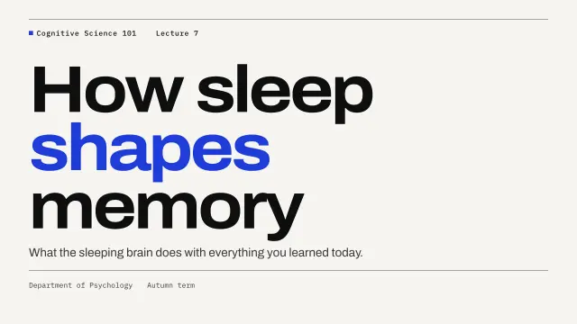
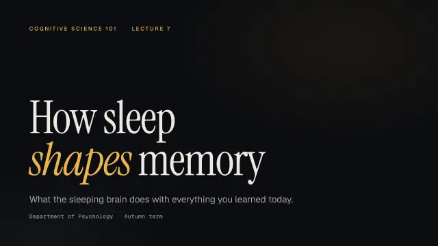
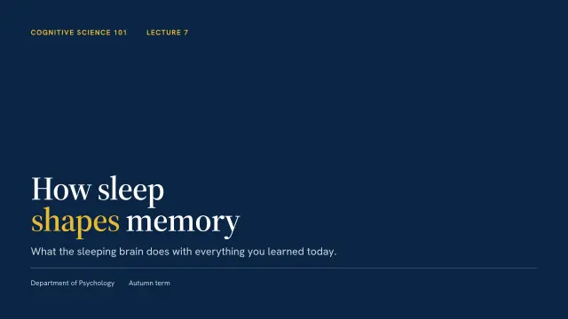

Pitch decks with a story investors can follow.
Decklume outlines your pitch as problem, why now, solution, traction, market and ask, then builds it in a theme that fits the room, with Magic Move transitions and a presenter view for demo day.
/plugin install decklume@decklume 

What you can make
Copy a prompt, change the details, paste it into Claude Code.
- Seed pitch decks
Build a 12-slide seed pitch from our one-pager, Grid theme, ending with the raise and use of funds.- Demo-day decks
Make a 3-minute demo-day deck in Aurora with one big traction number and the product screenshot full-bleed.- Product launches
Launch deck for our v2 release with a before/after comparison and a live link on the closing slide. - Board and investor updates
Turn this month's metrics into an investor update in Atlas with numbered exhibits.
Why it works for founders
- A pitch arc built in
- The storyline follows the arc investors expect, and every slide states one claim.
- Magic Move
- Your traction number or product shot glides from one slide to the next, Keynote-style.
- Presenter view
- Notes, timer and the next slide in a second window, synced live, for demo day.
- Send it anywhere
- One HTML file, a small vector PDF for email, or a live link that works on phones.
Themes to start with



See a finished example
Startup pitch: A seed pitch for a fictional study app. The company, team and every figure are illustrative.
Questions
Can Decklume use our brand colours and logo?
Yes. Ask for a custom theme from your logo or brand guide; it gets the same layouts and design checks as the built-in themes.
Will it invent traction numbers?
No. The skill never fabricates metrics; it uses the numbers you provide and asks when one is missing.
Can investors open it on a phone?
Yes. Decks keep their 16:9 layout on any screen and support swipe navigation. Deploy to a link in one command.
Do I need design skills?
No. You choose between three styles rendered with your own slides; the layouts, typography and checks are handled for you.